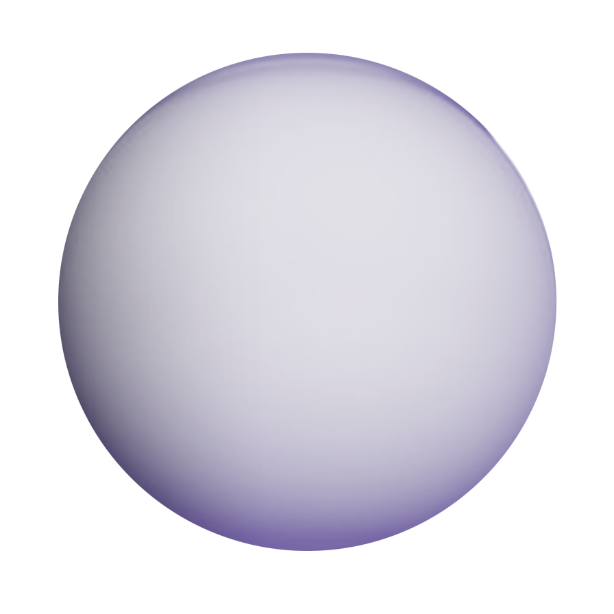

“ENCELADUS”
“TITAN”
saturn's moons
The second-biggest moon in the solar system, Titan, is the largest moon orbiting Saturn and a remarkable location in general. The only known planet other than Earth where liquid develops on its surface is Titan.
Because Earth revolves in the habitable zone of the solar system—a region where seas are neither too hot nor too cold to boil away—it contains oceans with liquid water. Titan's surface temperature is so low that most of the moon's surface is made of water ice rather than rock since the Saturn system is far outside of the habitable zone. Yet, the temperature is just right for methane and ethane to be liquid.

83 moons orbit Saturn. The International Astronomical Union has confirmed and named 63 moons, and another 20 moons are pending confirmation of finding and official designation (IAU). The enormous moon Titan is the largest of Saturn's moons; the smallest is as small as a sports stadium. The magnetosphere and rings of Saturn are shaped, enhanced, and materialized by the moons.
Rough sketches of Saturn's moons were produced during the Voyager and Pioneer flybys in the 1970s and 1980s. Throughout the course of its lengthy stay in Saturn's orbit, NASA's Cassini probe unearthed new mysteries that will pique the interest of a new generation of space scientists, including the finding of an ocean moon that may contain the building blocks for life.